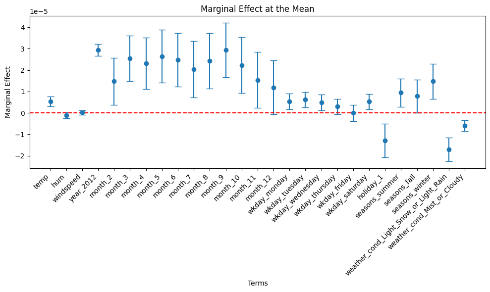
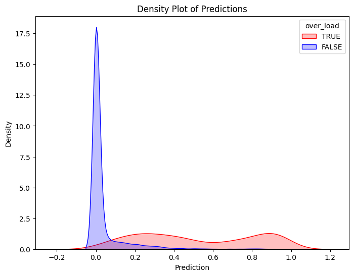
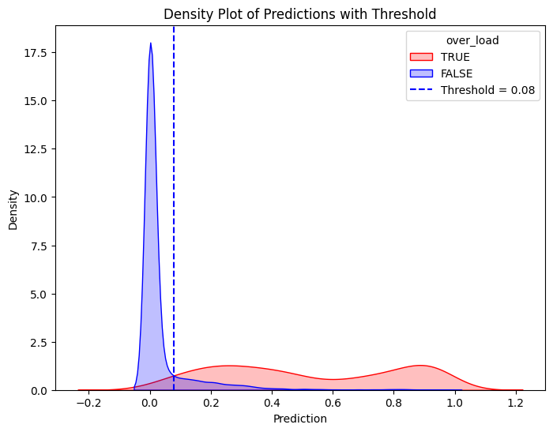
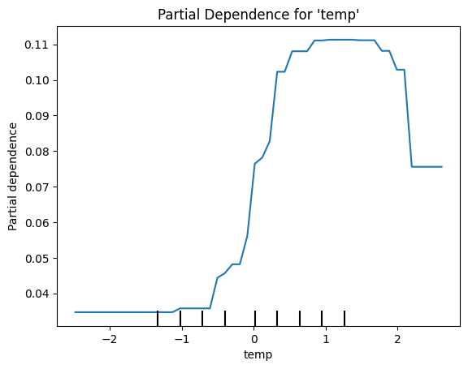

I solemnly swear that I will not cheat or engage in any form of academic dishonesty during this exam.
I will not communicate with other students or use unauthorized materials.
I will uphold the integrity of this exam and demonstrate my own knowledge and abilities.
By taking this pledge, I acknowledge that academic dishonesty undermines the academic process and is a violation of the trust placed in me as a student.
I accept the consequences of any violation of this promise.
Student’s Name:
Descriptive Statistics
The following provides the descriptive statistics for each part of Exam
index part question topic points mean sd
0 1 pt1 q1 VectorAssembler 2.00 0.90 0.21
1 2 NaN q1 GeneralizedLinearRegression 4.00 0.70 0.26
2 3 NaN q1 regression-table 1.00 1.00 0.00
3 4 NaN q2 prediction-training 1.00 1.00 0.00
4 5 NaN q2 prediction-test 1.00 1.00 0.00
5 6 NaN q3 ME 2.00 0.95 0.16
6 7 NaN q4 ME-year2012 2.00 0.66 0.36
7 8 NaN q5 double-density-plot 2.00 0.88 0.27
8 9 NaN q6 threshold 2.00 0.10 0.32
9 10 NaN q6 confusion-matrix 2.00 1.00 0.00
10 11 NaN q6 accuracy 0.25 0.90 0.32
11 12 NaN q6 precision 0.25 0.90 0.32
12 13 NaN q6 recall 0.25 0.90 0.32
13 14 NaN q6 specificity 0.25 0.90 0.32
14 15 NaN q6 average-rate 0.25 0.90 0.32
15 16 NaN q6 enrichment 0.25 0.90 0.32
16 17 NaN q7 ROC 1.00 0.93 0.24
17 18 NaN q7 AUC 1.00 0.93 0.24
18 19 NaN q8 recall-enrichment-plot 2.00 0.90 0.32
19 20 NaN q9 LogisticRegressionCV-penalty=l1 4.00 0.98 0.08
20 21 NaN q9 coef_lasso 3.00 1.00 0.00
21 22 NaN q9 accuracy 0.25 0.83 0.37
22 23 NaN q9 precision 0.25 0.83 0.37
23 24 NaN q9 recall 0.25 0.83 0.37
24 25 NaN q9 AUC 0.25 0.80 0.42
25 26 NaN q10 LogisticRegressionCV-penalty=l2 1.00 0.88 0.32
26 27 NaN q10 coef_ridge 1.00 0.90 0.32
27 28 NaN q10 accuracy 0.25 0.80 0.42
28 29 NaN q10 precision 0.25 0.80 0.42
29 30 NaN q10 recall 0.25 0.80 0.42
30 31 NaN q10 AUC 0.25 0.80 0.42
31 32 NaN q11 DecisionTreeClassifier.fit 4.00 0.50 0.39
32 33 NaN q11 max_depth = 6 1.00 0.50 0.53
33 34 NaN q11 min_impurity_decrease=0.0005 1.00 0.50 0.53
34 35 NaN q11 min_samples_split=200 1.00 0.53 0.51
35 36 NaN q11 plot_tree 2.00 0.45 0.48
36 37 NaN q12 RandomForestRegressor 4.00 0.85 0.24
37 38 NaN q12 max_features=19 1.00 0.60 0.52
38 39 NaN q12 n_estimators=500 1.00 1.00 0.00
39 40 NaN q12 oob_score=True 1.00 1.00 0.00
40 41 NaN q12 Train-MSE 1.00 1.00 0.00
41 42 NaN q12 Test-MSE 1.00 1.00 0.00
42 43 NaN q12 VIP 2.00 0.60 0.52
43 44 NaN q13 XGBRegressor 4.00 1.00 0.00
44 45 NaN q13 GridSearchCV 2.00 1.00 0.00
45 46 NaN q13 vip 2.00 NaN NaN
46 47 NaN q14 PartialDependenceDisplay 3.50 0.70 0.42
47 48 section_2 q15 beta-temp 1.50 0.54 0.17
48 49 NaN q15 beta-hum 1.50 0.00 0.00
49 50 NaN q15 beta-year-2012 1.50 0.54 0.17
50 51 NaN q16 ME-temp 3.00 0.42 0.42
51 52 NaN q16 percentage-point 1.50 0.10 0.32
52 53 NaN q17 accuracy 1.00 0.70 0.35
53 54 NaN q17 precision 1.00 0.65 0.32
54 55 NaN q17 recall 1.00 0.63 0.34
55 56 NaN q18 p>1/2 5.00 0.45 0.33
56 57 NaN q19 gini/class 2.00 0.53 0.51
57 58 NaN q19 decision-rules 3.00 0.65 0.47
58 59 NaN q20 model-performance-on-unseen-data 3.00 0.78 0.30
59 60 NaN q20 overfitting 3.00 0.78 0.34
60 61 NaN q21a bias 2.00 0.20 0.23
61 62 NaN q21b1 why-bias 1.00 0.30 0.48
62 63 NaN q21b2 cov(x,e)=0 1.00 0.10 0.32
63 64 NaN q21b3 when 1.00 0.23 0.42
index 1
part pt1
question q1
topic VectorAssembler
points 2.0
mean 0.9
sd 0.21
Libaries and PySpark Setup
# Below is for an interactive display of Pandas DataFrame in Colabfrom google.colab import data_tabledata_table.enable_dataframe_formatter()from tabulate import tabulate # for table summary# For basic librariesimport pandas as pdimport numpy as npimport seaborn as snsimport matplotlib.pyplot as pltimport seaborn as snsimport scipy.stats as statsfrom scipy.stats import normimport statsmodels.api as sm # for lowess smoothing# `scikit-learn`from sklearn.metrics import mean_squared_errorfrom sklearn.metrics import (confusion_matrix, accuracy_score, precision_score, recall_score, roc_curve, roc_auc_score, precision_recall_curve)from sklearn.model_selection import train_test_split, KFold, cross_val_scorefrom sklearn.inspection import PartialDependenceDisplayfrom sklearn.preprocessing import scale # zero mean & one s.d.from sklearn.linear_model import LassoCV, lasso_pathfrom sklearn.linear_model import RidgeCV, Ridgefrom sklearn.linear_model import ElasticNetCVfrom sklearn.linear_model import LogisticRegression, LogisticRegressionCVfrom sklearn.tree import DecisionTreeClassifier, DecisionTreeRegressor, plot_treefrom sklearn.ensemble import RandomForestRegressorfrom sklearn.model_selection import GridSearchCVimport xgboost as xgbfrom xgboost import XGBRegressor, plot_importance# PySparkfrom pyspark.sql import SparkSessionfrom pyspark.sql.functions import rand, col, pow, mean, avg, when, log, sqrt, expfrom pyspark.ml.feature import VectorAssemblerfrom pyspark.ml.regression import LinearRegression, GeneralizedLinearRegressionfrom pyspark.ml.evaluation import BinaryClassificationEvaluatorspark = SparkSession.builder.master("local[*]").getOrCreate()
UDFs
regression_table()
def regression_table(model, assembler):""" Creates a formatted regression table from a fitted LinearRegression model and its VectorAssembler. If the model’s labelCol (retrieved using getLabelCol()) starts with "log", an extra column showing np.exp(coeff) is added immediately after the beta estimate column for predictor rows. Additionally, np.exp() of the 95% CI Lower and Upper bounds is also added unless the predictor's name includes "log_". The Intercept row does not include exponentiated values. When labelCol starts with "log", the columns are ordered as: y: [label] | Beta | Exp(Beta) | Sig. | Std. Error | p-value | 95% CI Lower | 95% CI Upper | Exp(95% CI Lower) | Exp(95% CI Upper) Otherwise, the columns are: y: [label] | Beta | Sig. | Std. Error | p-value | 95% CI Lower | 95% CI Upper Parameters: model: A fitted LinearRegression model (with a .summary attribute and a labelCol). assembler: The VectorAssembler used to assemble the features for the model. Returns: A formatted string containing the regression table. """# Determine if we should display exponential values for coefficients. is_log = model.getLabelCol().lower().startswith("log")# Extract coefficients and standard errors as NumPy arrays. coeffs = model.coefficients.toArray() std_errors_all = np.array(model.summary.coefficientStandardErrors)# Check if the intercept's standard error is included (one extra element).iflen(std_errors_all) ==len(coeffs) +1: intercept_se = std_errors_all[0] std_errors = std_errors_all[1:]else: intercept_se =None std_errors = std_errors_all# Use provided tValues and pValues. df = model.summary.numInstances -len(coeffs) -1 t_critical = stats.t.ppf(0.975, df) p_values = model.summary.pValues# Helper: significance stars.def significance_stars(p):if p <0.01:return"***"elif p <0.05:return"**"elif p <0.1:return"*"else:return""# Build table rows for each feature. table = []for feature, beta, se, p inzip(assembler.getInputCols(), coeffs, std_errors, p_values): ci_lower = beta - t_critical * se ci_upper = beta + t_critical * se# Check if predictor contains "log_" to determine if exponentiation should be applied apply_exp = is_log and"log_"notin feature.lower() exp_beta = np.exp(beta) if apply_exp else"" exp_ci_lower = np.exp(ci_lower) if apply_exp else"" exp_ci_upper = np.exp(ci_upper) if apply_exp else""if is_log: table.append([ feature, # Predictor name beta, # Beta estimate exp_beta, # Exponential of beta (or blank) significance_stars(p), se, p, ci_lower, ci_upper, exp_ci_lower, # Exponential of 95% CI lower bound exp_ci_upper # Exponential of 95% CI upper bound ])else: table.append([ feature, beta, significance_stars(p), se, p, ci_lower, ci_upper ])# Process intercept.if intercept_se isnotNone: intercept_p = model.summary.pValues[0] if model.summary.pValues isnotNoneelseNone intercept_sig = significance_stars(intercept_p) ci_intercept_lower = model.intercept - t_critical * intercept_se ci_intercept_upper = model.intercept + t_critical * intercept_seelse: intercept_sig ="" ci_intercept_lower ="" ci_intercept_upper ="" intercept_se =""if is_log: table.append(["Intercept", model.intercept,"", # Removed np.exp(model.intercept) intercept_sig, intercept_se,"", ci_intercept_lower,"", ci_intercept_upper,"" ])else: table.append(["Intercept", model.intercept, intercept_sig, intercept_se,"", ci_intercept_lower, ci_intercept_upper ])# Append overall model metrics.if is_log: table.append(["Observations", model.summary.numInstances, "", "", "", "", "", "", "", ""]) table.append(["R²", model.summary.r2, "", "", "", "", "", "", "", ""]) table.append(["RMSE", model.summary.rootMeanSquaredError, "", "", "", "", "", "", "", ""])else: table.append(["Observations", model.summary.numInstances, "", "", "", "", ""]) table.append(["R²", model.summary.r2, "", "", "", "", ""]) table.append(["RMSE", model.summary.rootMeanSquaredError, "", "", "", "", ""])# Format the table rows. formatted_table = []for row in table: formatted_row = []for i, item inenumerate(row):# Format Observations as integer with commas.if row[0] =="Observations"and i ==1andisinstance(item, (int, float, np.floating)) and item !="": formatted_row.append(f"{int(item):,}")elifisinstance(item, (int, float, np.floating)) and item !="":if is_log:# When is_log, the columns are:# 0: Metric, 1: Beta, 2: Exp(Beta), 3: Sig, 4: Std. Error, 5: p-value,# 6: 95% CI Lower, 7: 95% CI Upper, 8: Exp(95% CI Lower), 9: Exp(95% CI Upper).if i in [1, 2, 4, 6, 7, 8, 9]: formatted_row.append(f"{item:,.3f}")elif i ==5: formatted_row.append(f"{item:.3f}")else: formatted_row.append(f"{item:.3f}")else:# When not is_log, the columns are:# 0: Metric, 1: Beta, 2: Sig, 3: Std. Error, 4: p-value, 5: 95% CI Lower, 6: 95% CI Upper.if i in [1, 3, 5, 6]: formatted_row.append(f"{item:,.3f}")elif i ==4: formatted_row.append(f"{item:.3f}")else: formatted_row.append(f"{item:.3f}")else: formatted_row.append(item) formatted_table.append(formatted_row)# Set header and column alignment based on whether label starts with "log"if is_log: headers = [f"y: {model.getLabelCol()}","Beta", "Exp(Beta)", "Sig.", "Std. Error", "p-value","95% CI Lower", "95% CI Upper", "Exp(95% CI Lower)", "Exp(95% CI Upper)" ] colalign = ("left", "right", "right", "center", "right", "right", "right", "right", "right", "right")else: headers = [f"y: {model.getLabelCol()}", "Beta", "Sig.", "Std. Error", "p-value", "95% CI Lower", "95% CI Upper"] colalign = ("left", "right", "center", "right", "right", "right", "right") table_str = tabulate( formatted_table, headers=headers, tablefmt="pretty", colalign=colalign )# Insert a dashed line after the Intercept row. lines = table_str.split("\n") dash_line ='-'*len(lines[0])for i, line inenumerate(lines):if"Intercept"in line andnot line.strip().startswith('+'): lines.insert(i+1, dash_line)breakreturn"\n".join(lines)# Example usage:# print(regression_table(model_1, assembler_1))
add_dummy_variables()
def add_dummy_variables(var_name, reference_level, category_order=None):""" Creates dummy variables for the specified column in the global DataFrames dtrain and dtest. Allows manual setting of category order. Parameters: var_name (str): The name of the categorical column (e.g., "borough_name"). reference_level (int): Index of the category to be used as the reference (dummy omitted). category_order (list, optional): List of categories in the desired order. If None, categories are sorted. Returns: dummy_cols (list): List of dummy column names excluding the reference category. ref_category (str): The category chosen as the reference. """global dtrain, dtest# Get distinct categories from the training set. categories = dtrain.select(var_name).distinct().rdd.flatMap(lambda x: x).collect()# Convert booleans to strings if present. categories = [str(c) ifisinstance(c, bool) else c for c in categories]# Use manual category order if provided; otherwise, sort categories.if category_order:# Ensure all categories are present in the user-defined order missing =set(categories) -set(category_order)if missing:raiseValueError(f"These categories are missing from your custom order: {missing}") categories = category_orderelse: categories =sorted(categories)# Validate reference_levelif reference_level <0or reference_level >=len(categories):raiseValueError(f"reference_level must be between 0 and {len(categories) -1}")# Define the reference category ref_category = categories[reference_level]print("Reference category (dummy omitted):", ref_category)# Create dummy variables for all categoriesfor cat in categories: dummy_col_name = var_name +"_"+str(cat).replace(" ", "_") dtrain = dtrain.withColumn(dummy_col_name, when(col(var_name) == cat, 1).otherwise(0)) dtest = dtest.withColumn(dummy_col_name, when(col(var_name) == cat, 1).otherwise(0))# List of dummy columns, excluding the reference category dummy_cols = [var_name +"_"+str(cat).replace(" ", "_") for cat in categories if cat != ref_category]return dummy_cols, ref_category# Example usage without category_order:# dummy_cols_year, ref_category_year = add_dummy_variables('year', 0)# Example usage with category_order:# custom_order_wkday = ['sunday', 'monday', 'tuesday', 'wednesday', 'thursday', 'friday', 'saturday']# dummy_cols_wkday, ref_category_wkday = add_dummy_variables('wkday', reference_level=0, category_order = custom_order_wkday)
add_interaction_terms()
def add_interaction_terms(var_list1, var_list2, var_list3=None):""" Creates interaction term columns in the global DataFrames dtrain and dtest. For two sets of variable names (which may represent categorical (dummy) or continuous variables), this function creates two-way interactions by multiplying each variable in var_list1 with each variable in var_list2. Optionally, if a third list of variable names (var_list3) is provided, the function also creates three-way interactions among each variable in var_list1, each variable in var_list2, and each variable in var_list3. Parameters: var_list1 (list): List of column names for the first set of variables. var_list2 (list): List of column names for the second set of variables. var_list3 (list, optional): List of column names for the third set of variables for three-way interactions. Returns: A flat list of new interaction column names. """global dtrain, dtest interaction_cols = []# Create two-way interactions between var_list1 and var_list2.for var1 in var_list1:for var2 in var_list2: col_name =f"{var1}_*_{var2}" dtrain = dtrain.withColumn(col_name, col(var1).cast("double") * col(var2).cast("double")) dtest = dtest.withColumn(col_name, col(var1).cast("double") * col(var2).cast("double")) interaction_cols.append(col_name)# Create two-way interactions between var_list1 and var_list3.if var_list3 isnotNone:for var1 in var_list1:for var3 in var_list3: col_name =f"{var1}_*_{var3}" dtrain = dtrain.withColumn(col_name, col(var1).cast("double") * col(var3).cast("double")) dtest = dtest.withColumn(col_name, col(var1).cast("double") * col(var3).cast("double")) interaction_cols.append(col_name)# Create two-way interactions between var_list2 and var_list3.if var_list3 isnotNone:for var2 in var_list2:for var3 in var_list3: col_name =f"{var2}_*_{var3}" dtrain = dtrain.withColumn(col_name, col(var2).cast("double") * col(var3).cast("double")) dtest = dtest.withColumn(col_name, col(var2).cast("double") * col(var3).cast("double")) interaction_cols.append(col_name)# If a third list is provided, create three-way interactions.if var_list3 isnotNone:for var1 in var_list1:for var2 in var_list2:for var3 in var_list3: col_name =f"{var1}_*_{var2}_*_{var3}" dtrain = dtrain.withColumn(col_name, col(var1).cast("double") * col(var2).cast("double") * col(var3).cast("double")) dtest = dtest.withColumn(col_name, col(var1).cast("double") * col(var2).cast("double") * col(var3).cast("double")) interaction_cols.append(col_name)return interaction_cols# Example# interaction_cols_brand_price = add_interaction_terms(dummy_cols_brand, ['log_price'])# interaction_cols_brand_ad_price = add_interaction_terms(dummy_cols_brand, dummy_cols_ad, ['log_price'])
compare_reg_models()
def compare_reg_models(models, assemblers, names=None):""" Produces a single formatted table comparing multiple regression models. For each predictor (the union across models, ordered by first appearance), the table shows the beta estimate (with significance stars) from each model (blank if not used). For a predictor, if a model's outcome (model.getLabelCol()) starts with "log", the cell displays both the beta and its exponential (separated by " / "), except when the predictor's name includes "log_". (The intercept row does not display exp(.)) Additional rows for Intercept, Observations, R², and RMSE are appended. The header's first column is labeled "Predictor", and subsequent columns are "y: [outcome] ([name])" for each model. The table is produced in grid format (with vertical lines). A dashed line (using '-' characters) is inserted at the top, immediately after the header, and at the bottom. Additionally, immediately after the Intercept row, the border line is replaced with one using '=' (to appear as, for example, "+==============================================+==========================+..."). Parameters: models (list): List of fitted LinearRegression models. assemblers (list): List of corresponding VectorAssembler objects. names (list, optional): List of model names; defaults to "Model 1", "Model 2", etc. Returns: A formatted string containing the combined regression table. """# Default model names.if names isNone: names = [f"Model {i+1}"for i inrange(len(models))]# For each model, get outcome and determine if that model is log-transformed. outcomes = [m.getLabelCol() for m in models] is_log_flags = [out.lower().startswith("log") for out in outcomes]# Build an ordered union of predictors based on first appearance. ordered_predictors = []for assembler in assemblers:for feat in assembler.getInputCols():if feat notin ordered_predictors: ordered_predictors.append(feat)# Helper for significance stars.def significance_stars(p):if p isNone:return""if p <0.01:return"***"elif p <0.05:return"**"elif p <0.1:return"*"else:return""# Build rows for each predictor. rows = []for feat in ordered_predictors: row = [feat]for m, a, is_log inzip(models, assemblers, is_log_flags): feats_model = a.getInputCols()if feat in feats_model: idx = feats_model.index(feat) beta = m.coefficients.toArray()[idx] p_val = m.summary.pValues[idx] if m.summary.pValues isnotNoneelseNone stars = significance_stars(p_val) cell =f"{beta:.3f}{stars}"# Only add exp(beta) if model is log and predictor name does NOT include "log_"if is_log and ("log_"notin feat.lower()): cell +=f" / {np.exp(beta):,.3f}" row.append(cell)else: row.append("") rows.append(row)# Build intercept row (do NOT compute exp(intercept)). intercept_row = ["Intercept"]for m in models: std_all = np.array(m.summary.coefficientStandardErrors) coeffs = m.coefficients.toArray()iflen(std_all) ==len(coeffs) +1: intercept_p = m.summary.pValues[0] if m.summary.pValues isnotNoneelseNoneelse: intercept_p =None sig = significance_stars(intercept_p) cell =f"{m.intercept:.3f}{sig}" intercept_row.append(cell) rows.append(intercept_row)# Add Observations row. obs_row = ["Observations"]for m in models: obs = m.summary.numInstances obs_row.append(f"{int(obs):,}") rows.append(obs_row)# Add R² row. r2_row = ["R²"]for m in models: r2_row.append(f"{m.summary.r2:.3f}") rows.append(r2_row)# Add RMSE row. rmse_row = ["RMSE"]for m in models: rmse_row.append(f"{m.summary.rootMeanSquaredError:.3f}") rows.append(rmse_row)# Build header: first column "Predictor", then for each model: "y: [outcome] ([name])" header = ["Predictor"]for out, name inzip(outcomes, names): header.append(f"y: {out} ({name})")# Create table string using grid format. table_str = tabulate(rows, headers=header, tablefmt="grid", colalign=("left",) + ("right",)*len(models))# Split into lines. lines = table_str.split("\n")# Create a dashed line spanning the full width. full_width =len(lines[0]) dash_line ='-'* full_width# Create an equals line by replacing '-' with '='. eq_line = dash_line.replace('-', '=')# Insert a dashed line after the header row. lines = table_str.split("\n")# In grid format, header and separator are usually the first two lines. lines.insert(2, dash_line)# Insert an equals line after the Intercept row.for i, line inenumerate(lines):if line.startswith("|") and"Intercept"in line:if i+1<len(lines): lines[i+1] = eq_linebreak# Add dashed lines at the very top and bottom. final_table = dash_line +"\n"+"\n".join(lines) +"\n"+ dash_linereturn final_table# Example usage:# print(compare_reg_models([model_1, model_2, model_3],# [assembler_1, assembler_2, assembler_3],# ["Model 1", "Model 2", "Model 3"]))
compare_rmse()
def compare_rmse(test_dfs, label_col, pred_col="prediction", names=None):""" Computes and compares RMSE values for a list of test DataFrames. For each DataFrame in test_dfs, this function calculates the RMSE between the actual outcome (given by label_col) and the predicted value (given by pred_col, default "prediction"). It then produces a formatted table where the first column header is empty and the first row's first cell is "RMSE", with each model's RMSE in its own column. Parameters: test_dfs (list): List of test DataFrames. label_col (str): The name of the outcome column. pred_col (str, optional): The name of the prediction column (default "prediction"). names (list, optional): List of model names corresponding to the test DataFrames. Defaults to "Model 1", "Model 2", etc. Returns: A formatted string containing a table that compares RMSE values for each test DataFrame, with one model per column. """# Set default model names if none provided.if names isNone: names = [f"Model {i+1}"for i inrange(len(test_dfs))] rmse_values = []for df in test_dfs:# Create a column for squared error. df = df.withColumn("error_sq", pow(col(label_col) - col(pred_col), 2))# Calculate RMSE: square root of the mean squared error. rmse = df.agg(sqrt(avg("error_sq")).alias("rmse")).collect()[0]["rmse"] rmse_values.append(rmse)# Build a single row table: first cell "RMSE", then one cell per model with the RMSE value. row = ["RMSE"] + [f"{rmse:.3f}"for rmse in rmse_values]# Build header: first column header is empty, then model names. header = [""] + names table_str = tabulate([row], headers=header, tablefmt="grid", colalign=("left",) + ("right",)*len(names))return table_str# Example usage:# print(compare_rmse([dtest_1, dtest_2, dtest_3], "log_sales", names=["Model 1", "Model 2", "Model 3"]))
residual_plot()
def residual_plot(df, label_col, model_name):""" Generates a residual plot for a given test dataframe. Parameters: df (DataFrame): Spark DataFrame containing the test set with predictions. label_col (str): The column name of the actual outcome variable. title (str): The title for the residual plot. Returns: None (displays the plot) """# Convert to Pandas DataFrame df_pd = df.select(["prediction", label_col]).toPandas() df_pd["residual"] = df_pd[label_col] - df_pd["prediction"]# Scatter plot of residuals vs. predicted values plt.scatter(df_pd["prediction"], df_pd["residual"], alpha=0.2, color="darkgray")# Use LOWESS smoothing for trend line smoothed = sm.nonparametric.lowess(df_pd["residual"], df_pd["prediction"]) plt.plot(smoothed[:, 0], smoothed[:, 1], color="darkblue")# Add reference line at y=0 plt.axhline(y=0, color="red", linestyle="--")# Labels and title (model_name) plt.xlabel("Predicted Values") plt.ylabel("Residuals") model_name ="Residual Plot for "+ model_name plt.title(model_name)# Show plot plt.show()# Example usage:# residual_plot(dtest_1, "log_sales", "Model 1")
marginal_effects()
def marginal_effects(model, means):""" Compute marginal effects for all predictors in a PySpark GeneralizedLinearRegression model (logit) and return a formatted table with statistical significance and standard errors. Parameters: model: Fitted GeneralizedLinearRegression model (with binomial family and logit link). means: List of mean values for the predictor variables. Returns: - A formatted string containing the marginal effects table. - A Pandas DataFrame with marginal effects, standard errors, confidence intervals, and significance stars. """global assembler_predictors # Use the global assembler_predictors list# Extract model coefficients, standard errors, and intercept coeffs = np.array(model.coefficients) std_errors = np.array(model.summary.coefficientStandardErrors) intercept = model.intercept# Compute linear combination of means and coefficients (XB) XB = np.dot(means, coeffs) + intercept# Compute derivative of logistic function (G'(XB)) G_prime_XB = np.exp(XB) / ((1+ np.exp(XB)) **2)# Helper: significance stars.def significance_stars(p):if p <0.01:return"***"elif p <0.05:return"**"elif p <0.1:return"*"else:return""# Create lists to store results results = [] df_results = [] # For Pandas DataFramefor i, predictor inenumerate(assembler_predictors):# Compute marginal effect marginal_effect = G_prime_XB * coeffs[i]# Compute standard error of the marginal effect std_error = G_prime_XB * std_errors[i]# Compute z-score and p-value z_score = marginal_effect / std_error if std_error !=0else np.nan p_value =2* (1- norm.cdf(abs(z_score))) ifnot np.isnan(z_score) else np.nan# Compute confidence interval (95%) ci_lower = marginal_effect -1.96* std_error ci_upper = marginal_effect +1.96* std_error# Append results for table formatting results.append([ predictor,f"{marginal_effect: .6f}", significance_stars(p_value),f"{std_error: .6f}",f"{ci_lower: .6f}",f"{ci_upper: .6f}" ])# Append results for Pandas DataFrame df_results.append({"Variable": predictor,"Marginal Effect": marginal_effect,"Significance": significance_stars(p_value),"Std. Error": std_error,"95% CI Lower": ci_lower,"95% CI Upper": ci_upper })# Convert results to formatted table table_str = tabulate(results, headers=["Variable", "Marginal Effect", "Significance", "Std. Error", "95% CI Lower", "95% CI Upper"], tablefmt="pretty", colalign=("left", "decimal", "left", "decimal", "decimal", "decimal"))# Convert results to Pandas DataFrame df_results = pd.DataFrame(df_results)return table_str, df_results# Example usage:# means = [0.5, 30] # Mean values for x1 and x2# assembler_predictors = ['x1', 'x2'] # Define globally before calling the function# table_output, df_output = marginal_effects(fitted_model, means)# print(table_output)# display(df_output)
Section 1. Bikeshare in D.C.
Data Preparation
# 1. Read CSV data from URLdf_pd = pd.read_csv('https://bcdanl.github.io/data/bikeshare_cleaned.csv')# Adding an `over_load` variabledf_pd['over_load'] = np.where(df_pd['cnt'] >500, 1, 0)df_pd
cnt
year
month
date
hr
wkday
holiday
seasons
weather_cond
temp
hum
windspeed
over_load
0
16
2011
1
1
0
saturday
0
spring
Clear or Few Cloudy
-1.334609
0.947345
-1.553844
0
1
40
2011
1
1
1
saturday
0
spring
Clear or Few Cloudy
-1.438475
0.895513
-1.553844
0
2
32
2011
1
1
2
saturday
0
spring
Clear or Few Cloudy
-1.438475
0.895513
-1.553844
0
3
13
2011
1
1
3
saturday
0
spring
Clear or Few Cloudy
-1.334609
0.636351
-1.553844
0
4
1
2011
1
1
4
saturday
0
spring
Clear or Few Cloudy
-1.334609
0.636351
-1.553844
0
...
...
...
...
...
...
...
...
...
...
...
...
...
...
17371
119
2012
12
31
19
monday
0
spring
Mist or Cloudy
-1.230743
-0.141133
-0.211685
0
17372
89
2012
12
31
20
monday
0
spring
Mist or Cloudy
-1.230743
-0.141133
-0.211685
0
17373
90
2012
12
31
21
monday
0
spring
Clear or Few Cloudy
-1.230743
-0.141133
-0.211685
0
17374
61
2012
12
31
22
monday
0
spring
Clear or Few Cloudy
-1.230743
-0.348463
-0.456086
0
17375
49
2012
12
31
23
monday
0
spring
Clear or Few Cloudy
-1.230743
0.118028
-0.456086
0
17376 rows × 13 columns
Variable description
Variable
Description
cnt
Count of total rental bikes
year
Year
month
Month
date
Date
hr
Hour
wkday
Weekday
holiday
Holiday indicator (1 if holiday, 0 otherwise)
seasons
Season
weather_cond
Weather condition
temp
Temperature (measured in standard deviations from average)
hum
Humidity (measured in standard deviations from average)
windspeed
Wind speed (measured in standard deviations from average)
# assembling predictorsconti_cols = ["temp", "hum", "windspeed"]# Keep the name assembler_predictors unchanged,# as it will be used as a global variable in the marginal_effects UDF.assembler_predictors = ( conti_cols + dummy_cols_year + dummy_cols_month + dummy_cols_hr + dummy_cols_wkday + dummy_cols_holiday + dummy_cols_seasons + dummy_cols_weather_cond)assembler_1 = VectorAssembler( inputCols = assembler_predictors, outputCol ="predictors")dtrain_1 = assembler_1.transform(dtrain)dtest_1 = assembler_1.transform(dtest)# training the modelmodel_1 = ( GeneralizedLinearRegression(featuresCol="predictors", labelCol="over_load", family="binomial", link="logit") .fit(dtrain_1))
Question 2
Make a prediction on training data
Make a prediction on test data
# making prediction on both training and testdtrain_1 = model_1.transform(dtrain_1)dtest_1 = model_1.transform(dtest_1)
Question 3
Calculate the marginal effect of each predictor at the mean.
# Compute meansmeans_df = dtrain_1.select([mean(col).alias(col) for col in assembler_predictors])# Collect the results as a listmeans = means_df.collect()[0]means_list = [means[col] for col in assembler_predictors]table_output, df_ME = marginal_effects(model_1, means_list) # Instead of mean values, some other representative values can also be chosen.print(table_output)
# Increase figure size to prevent overlappingplt.figure(figsize=(10, 6))# Plot using the DataFrame columnsplt.errorbar(df_ME2["Variable"], df_ME2["Marginal Effect"], yerr=1.96* df_ME2["Std. Error"], fmt='o', capsize=5)# Labels and titleplt.xlabel("Terms")plt.ylabel("Marginal Effect")plt.title("Marginal Effect at the Mean")# Add horizontal line at 0 for referenceplt.axhline(0, color="red", linestyle="--")# Adjust x-axis labels to avoid overlapplt.xticks(rotation=45, ha="right") # Rotate and align labels to the rightplt.tight_layout() # Adjust layout to prevent overlap# Show plotplt.show()
Question 4
Calculate the marginal effect of each predictor at the mean for year 2012.
# Compute means for year2012means_df_year2012 = ( dtrain_1 .filter( ( col("year_2012") ==1 ) ) .select([mean(col).alias(col) for col in assembler_predictors]))# Collect the results as a listmeans_year2012 = means_df_year2012.collect()[0]means_list_year2012 = [means_year2012[col] for col in assembler_predictors]table_output_s, df_ME_s = marginal_effects(model_1, means_list_year2012) # Instead of mean values, some other representative values can also be chosen.print(table_output_s)
df_ME_s2 = df_ME_s[~df_ME_s['Variable'].str.contains('hr_')]# Increase figure size to prevent overlappingplt.figure(figsize=(10, 6))# Plot using the DataFrame columnsplt.errorbar(df_ME_s2["Variable"], df_ME_s2["Marginal Effect"], yerr=1.96* df_ME_s2["Std. Error"], fmt='o', capsize=5)# Labels and titleplt.xlabel("Terms")plt.ylabel("Marginal Effect")plt.title("Marginal Effect at the Mean")# Add horizontal line at 0 for referenceplt.axhline(0, color="red", linestyle="--")# Adjust x-axis labels to avoid overlapplt.xticks(rotation=45, ha="right") # Rotate and align labels to the rightplt.tight_layout() # Adjust layout to prevent overlap# Show plotplt.show()

Question 5
Visualize a double density plot of predictions
# Filter training data for atRisk == 1 and atRisk == 0pdf = dtrain_1.select("prediction", "over_load").toPandas()train_true = pdf[pdf["over_load"] ==1]train_false = pdf[pdf["over_load"] ==0]# Create the first density plotplt.figure(figsize=(8, 6))sns.kdeplot(train_true["prediction"], label="TRUE", color="red", fill=True)sns.kdeplot(train_false["prediction"], label="FALSE", color="blue", fill=True)plt.xlabel("Prediction")plt.ylabel("Density")plt.title("Density Plot of Predictions")plt.legend(title="over_load")plt.show()

# Define threshold for vertical linethreshold =0.08# Replace with actual value# Create the second density plot with vertical lineplt.figure(figsize=(8, 6))sns.kdeplot(train_true["prediction"], label="TRUE", color="red", fill=True)sns.kdeplot(train_false["prediction"], label="FALSE", color="blue", fill=True)plt.axvline(x=threshold, color="blue", linestyle="dashed", label=f"Threshold = {threshold}")plt.xlabel("Prediction")plt.ylabel("Density")plt.title("Density Plot of Predictions with Threshold")plt.legend(title="over_load")plt.show()

Question 6
Calculate the followings:
Confusion matrix with the threshold level that clearly separates the double density plots
Fit a classification tree model with: - At least 200 samples to consider splitting a node. - The minimum reduction of 0.0005 in impurity required for a split to occur. - Limits the tree to 6 levels.
# In scikit-learn, we can use min_impurity_decrease=0.0005 for a similar effect.tree_model = DecisionTreeClassifier(max_depth =6, min_impurity_decrease=0.0005, min_samples_split=200, random_state=42)# Fit the model using all predictors (all columns except 'medv')tree_model.fit(X_train, y_train)# Predict on training and test setsy_train_pred = tree_model.predict(X_train)y_test_pred = tree_model.predict(X_test)
# Plot the decision treeplt.figure(figsize=(12, 8), dpi =300)plot_tree(tree_model, feature_names=X_train.columns, class_names= [str(cls) for cls in tree_model.classes_], filled=True, rounded=True)plt.title("Classification Tree for Genre")plt.show()
19 predictors are allowed to consider when looking for the best split at each node in each tree
500 trees in the forest
Useing out-of-bag samples to estimate error
# Build the Random Forest model# max_features=13 means that at each split the algorithm randomly considers 13 predictors.rf = RandomForestRegressor(max_features=19, # Use 19 features at each split n_estimators=500, # Number of trees in the forest random_state=42, oob_score=True) # Use out-of-bag samples to estimate errorrf.fit(X_train, y_train)# Print the model detailsprint("Random Forest Model:")print(rf)# Output the model details (feature importances, OOB score, etc.)print("Out-of-bag score:", rf.oob_score_) # A rough estimate of generalization error# Generate predictions on training and testing setsy_train_pred = rf.predict(X_train)y_test_pred = rf.predict(X_test)# Calculate Mean Squared Errors (MSE) for both setstrain_mse = mean_squared_error(y_train, y_train_pred)test_mse = mean_squared_error(y_test, y_test_pred)print("Train MSE:", train_mse)print("Test MSE:", test_mse)# Optional: Plot predicted vs. observed values for test data# plt.figure(figsize=(8,6), dpi=300)# plt.scatter(y_test, y_test_pred, alpha=0.7)# plt.plot([min(y_test), max(y_test)], [min(y_test), max(y_test)], 'r--')# plt.xlabel("Observed medv")# plt.ylabel("Predicted medv")# plt.title("Random Forest: Observed vs. Predicted Values")# plt.show()
Random Forest Model:
RandomForestRegressor(max_features=30, n_estimators=500, oob_score=True,
random_state=42)
Out-of-bag score: 0.7179654724578944
Train MSE: 0.002611945163455086
Test MSE: 0.021199175809935203
# Get feature importances from the model (equivalent to importance(bag.boston) in R)importances = rf.feature_importances_feature_names = X_train.columnsprint("Feature Importances:")for name, imp inzip(feature_names, importances):print(f"{name}: {imp:.4f}")# Plot the feature importances, similar to varImpPlot(bag.boston) in R# Sort the features by importance for a nicer plot.indices = np.argsort(importances)[::-1]plt.figure(figsize=(10, 6), dpi=150)plt.title("Feature Importances")plt.bar(range(len(feature_names)), importances[indices], align='center')plt.xticks(range(len(feature_names)), feature_names[indices], rotation=90)plt.xlabel("Features")plt.ylabel("Importance")plt.tight_layout()plt.show()
# Define the grid of hyperparametersparam_grid = {"n_estimators": list(range(20, 201, 20)), # nrounds: 20, 40, ..., 200"learning_rate": [0.025, 0.05, 0.1, 0.3], # eta"gamma": [0], # gamma"max_depth": [1, 2, 3, 4],"colsample_bytree": [1],"min_child_weight": [1],"subsample": [1]}# Initialize the XGBRegressor with the regression objective and fixed random state for reproducibilityxgb_reg = XGBRegressor(objective="reg:squarederror", random_state=1937, verbosity=1)# Set up GridSearchCV with 10-fold cross-validation; scoring is negative MSEgrid_search = GridSearchCV( estimator=xgb_reg, param_grid=param_grid, scoring="neg_mean_squared_error", cv=5, verbose=1# Adjust verbosity as needed)# Fit the grid searchgrid_search.fit(X_train, y_train)# Train the final model using the best parameters (grid_search.best_estimator_ is already refit on entire data)final_model = grid_search.best_estimator_# Plot variable importance using XGBoost's plot_importance functionplt.figure(figsize=(10, 8))plot_importance(final_model)plt.title("Feature Importance")plt.show()# Calculate MSE on the training datay_pred_train = final_model.predict(X_train)train_mse = mean_squared_error(y_train, y_pred_train)print("Train MSE:", train_mse)# Calculate MSE on the test datay_pred = final_model.predict(X_test)test_mse = mean_squared_error(y_test, y_pred)print("Test MSE:", test_mse)# Print the best parameters found by GridSearchCVbest_params = grid_search.best_params_print("Best parameters:", best_params)
Fitting 10 folds for each of 160 candidates, totalling 1600 fits
Using the gradient boosting model, generate a partial dependence plot for the predictor temp, illustrating its average effect on the predicted outcome.
# Plot partial dependence for the predictor 'off'feature_names = X_train.columns.tolist()off_index = feature_names.index("temp")PartialDependenceDisplay.from_estimator(final_model, X_train, features=[off_index], feature_names=feature_names, kind="average")plt.title("Partial Dependence for 'temp'")plt.show()

Question 15
Below is the summary table of the model fit from Question 1 in Section 1:
Interpret the beta estimates for the following predictors:
temp
hum
year_2012
Question 16
Below is the summary table of the marginal effects at the mean from Question 4 in Section 1:
Interpret the estimate for the temp predictor:
Question 17
Below is the confusion matrix from Question 6 in Section 1:
Interpret the following metrics:
Accuracy
Precision
Recall
Question 18
Suppose you’re the manager of DC Bike. When there’s a high number of bike requests (cnt > 500), your team becomes overloaded, and you must pay $100/hr in overtime to handle the excess demand. Alternatively, you can avoid the risk of overtime by hiring an extra driver ahead of time at a fixed cost of $50/hr.
However, overload doesn’t happen every hour—sometimes it does, sometimes it doesn’t. Let’s say the probability of an overload happening in a given hour is p, and the probability of no overload is 1 - p.
You want to decide whether it’s worth hiring an extra driver ahead of time or taking the chance and only paying overtime if needed. To make this decision, compare (1) the expected cost of not hiring no extra driver with (2) the cost of hiring an extra driver, which is $50/hr.
Expected cost is the weighted average cost you’d expect in the long run, if you made the same decision many times under the same conditions.
It is calculated as:
(Expected Cost) = (Cost of Outcome 1 × Probability of Outcome 1) + (Cost of Outcome 2 × Probability of Outcome 2) + …
Option 1: No Extra Driver
If no overload:
Cost = $0, Probability = 1 - p
If overload:
Cost = $100, Probability = p
Option 2: Hire an Extra Driver
You always pay $50, regardless of whether overload happens or not.
At what value of p (probability of over_load = 1) is it cheaper on average to hire the extra driver?
Question 19
Below is the classification tree from Question 11 in Section 2:
Interpret the following two leaf nodes and explain the decision rules that lead to them:
Leaf Node 1
gini = 0.0
samples = 4258
value = [4258, 0]
class = 0
Leaf Node 2
gini = 0.206
samples = 129
value = [15, 114]
class = 1
Question 20
Compare and interpret the predictive performance and potential overfitting of the Random Forest and Gradient Boosting models based on the following results obtained in Questions 12 and 13:
Random Forest
Training MSE: 0.0026
Test MSE: 0.0212
Gradient Boosting
Training MSE: 0.0381
Test MSE: 0.0390
In your answer, evaluate how well each model performs on unseen data and explain whether there is evidence of overfitting in either model.
Calculate the magnitude of bias in the estimated \(\text{fertilizer}\) coefficient for Model 1 and for Model 2.
Q21b
Why does including \(\text{height}\) (Model 2) worsen the bias in \(\hat\beta_{\text{fertilizer}}\) and decrease the test‑set RMSE?
Given what regression finds about the coefficient, explain how partialling out \(\text{height}\) change the “independent” part of \(\text{fertilizer}\)?
When does adding a predictor make things worse, and when does it help?
Under what circumstances will including an extra predictor increase both coefficient bias and RMSE?
Under what circumstances will it instead reduce bias and improve predictive accuracy?